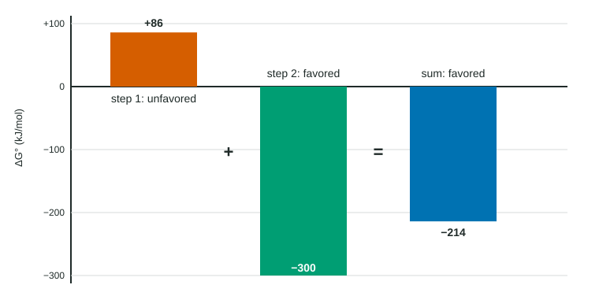

Some of the most useful reactions in industry and in living cells have a positive ΔG°: on their own they are not thermodynamically favored. They still happen, because something supplies the free energy they need. This page shows the most common way: coupling them to a reaction that is strongly favored.
An unfavored reaction we want
Copper metal can be made from the ore chalcocite, Cu2S. The simplest route would be to decompose it:
Cu2S(s) → 2 Cu(s) + S(s) ΔG° = +86.2 kJ/mol
With ΔG° > 0, this is not favored (its K at 298 K is about 8 × 10−16). Heating the ore by itself gives almost no copper.
Coupling through a shared intermediate
Now look for a reaction that uses up one of the products and is strongly favored. Sulfur burns in oxygen:
S(s) + O2(g) → SO2(g) ΔG° = −300.1 kJ/mol
Sulfur is made by the first reaction and consumed by the second. A species like this, shared between two reactions, is what links them. Add the two equations and the sulfur cancels:
Cu2S(s) + O2(g) → 2 Cu(s) + SO2(g)
Because ΔG° is a state function, the free energy change of the overall reaction is the sum of the steps (the same idea as Hess's law for ΔH°, topic 6.9).

Worked example. Find ΔG° and K at 298 K for Cu2S(s) + O2(g) → 2 Cu(s) + SO2(g).
ΔG°(overall) = ΔG°1 + ΔG°2 = (+86.2 kJ/mol) + (−300.1 kJ/mol) = −213.9 kJ/mol.
K = e−ΔG°/RT = e213,900 / (8.314 × 298) = e86.3 ≈ 3 × 1037.
The overall reaction is strongly favored (Figure 1). Equivalently, K(overall) = K1 × K2 = (8 × 10−16)(4 × 1052) ≈ 3 × 1037: adding reactions multiplies their K values, as in topic 7.6.
Notice what coupling does not do: it does not change ΔG° of the first reaction. Cu2S → 2 Cu + S still has ΔG° = +86.2 kJ/mol. What is favored is the overall process, because the favored step more than pays for the unfavored one.
Coupling in living cells
Cells use the same strategy constantly. Their main "driving" reaction is the breakdown of ATP:
ATP + H2O → ADP + phosphate ΔG° = −30.5 kJ/mol (standard value at pH 7)
The first step in using glucose attaches a phosphate group to it, which has ΔG° = +13.8 kJ/mol on its own. An enzyme couples the two so the phosphate group passes from ATP to glucose; the overall reaction, glucose + ATP → glucose-6-phosphate + ADP, has ΔG° = 13.8 − 30.5 = −16.7 kJ/mol and is favored. (These are standard values at pH 7, the standard biochemists use; at the real concentrations in a cell, ATP hydrolysis releases even more free energy.) The enzyme makes the coupled reaction fast; the coupling makes it favored.
Rules for coupling
- The reactions must share an intermediate, so that they add into one overall equation.
- ΔG° values add; K values multiply.
- The coupled process is favored only if the total ΔG° is negative. A favored reaction with ΔG° = −10 kJ/mol cannot drive one with ΔG° = +13.8 kJ/mol.
Driving reactions with outside energy
Coupling to another reaction is not the only way. A process with ΔG° > 0 can also be driven by a continuous supply of energy from outside the system. Passing an electric current through water splits it into H2 and O2, a reaction with ΔG° = +474.2 kJ/mol. Plants use the energy of absorbed light to build glucose from CO2 and water. Take the energy supply away and the process stops. You will see electrical driving again in the next three topics.